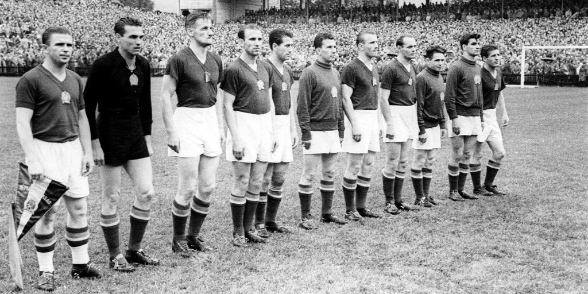
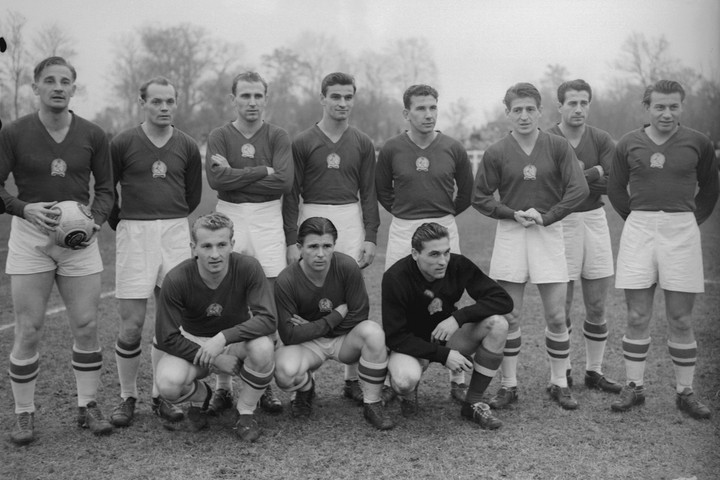

Az Arancsapat története

Az Aranycsapat minden idők legjobb magyar labdarúgó-válogatottjának díszítő jelzője és közismert neve. Ez a
csapat az 1950-es évtől 1956-ig játszott együtt, de maga a tágabb korszak 1941 és 1960 közé esik.

A csapatban számos kivételes képességű labdarúgó játszott, de közülük is kiemelkedett Puskás Ferenc, aki
emblematikus alakká vált, és ma is az egyik legismertebb magyar a világon. A csapat mérkőzéseinek sorából
kiemelkedik az 1953. november 25-én a londoni Wembley Stadionban az angol labdarúgó-válogatottal rendezett „Az
évszázad mérkőzésének” titulált 6 : 3-ra nyert barátságos találkozó. Ám a legfontosabb mérkőzése, az 1954-es
labdarúgó-világbajnokság döntője volt, ahol az öt éve veretlen magyar csapat 3–2-es vereséget szenvedett a
nyugatnémet válogatottól.